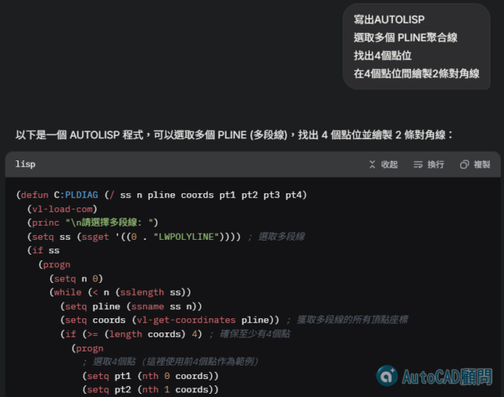

自己的小工具 不求人自己寫
1️⃣ PLDIAG 指令：選取多個4邊聚合線繪製對角線。
👇提示詞網頁說明，程式碼大家自行複製使用👇
https://grok.com/share/bGVnYWN5_2e24d417-7934-40be-b0cd-93b319b56d2d

👇👇詳解可看 AI 程式入門課程
教你【完善、優化、加速、除錯、保護及掛入】自己的 LSP 程式😸
https://autocad-tw.1shop.tw/8rvgjj
👇👇👇專屬B會員直接下載:
[專屬分享]選4邊聚合線畫對角線程式